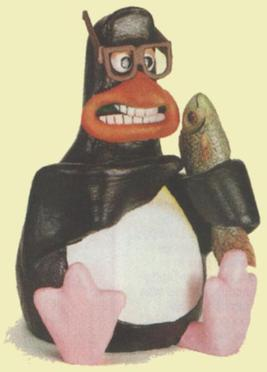

"I've been to Australia several times, these days mostly for Linux.Conf.Au. But my first trip—and the one when I was bitten by a ferocious fairy penguin: you really should keep those things locked up!—was in 93 or so, talking about Linux for the Australian Unix Users Group." -Linus Torvald.

In 1996 after an initial design suggestion made by Alan Cox, use of an image Torvalds found on an FTP site, showing a penguin figurine depicted in a similar style to the Creature Comforts characters created by Nick Park, the concept for Tux was further refined by Torvalds on the Linux kernel mailing list.
Linus Torvalds' "favourite penguin picture", used as inspiration for Tux Torvalds was looking for something fun and sympathetic to associate with Linux, and he felt that a slightly fat penguin sitting down after having eaten a great meal perfectly fit the bill.
The final and original design was a submission for a Linux logo contest by Larry Ewing using the first publicly released version (0.54) of GIMP, a free software graphics package. It was released by him under the following condition: Permission to use and/or modify this image is granted provided you acknowledge me lewing@isc.tamu.edu and The GIMP if someone asks.
Since Tux won none of the three competitions that were held Tux is formally known as the Linux brand character and not the logo.
The first person to call the penguin "Tux" was James Hughes, who said that it stood for "(T)orvalds (U)ni(X)". However, tux is also an abbreviation of tuxedo, the outfit which bears resemblance in appearance to a penguin.

Linus Torvalds' "favourite penguin picture", used as inspiration for Tux Torvalds was looking for something fun and sympathetic to associate with Linux, and he felt that a slightly fat penguin sitting down after having eaten a great meal perfectly fit the bill.
The final and original design was a submission for a Linux logo contest by Larry Ewing using the first publicly released version (0.54) of GIMP, a free software graphics package. It was released by him under the following condition: Permission to use and/or modify this image is granted provided you acknowledge me lewing@isc.tamu.edu and The GIMP if someone asks.
Since Tux won none of the three competitions that were held Tux is formally known as the Linux brand character and not the logo.
The first person to call the penguin "Tux" was James Hughes, who said that it stood for "(T)orvalds (U)ni(X)". However, tux is also an abbreviation of tuxedo, the outfit which bears resemblance in appearance to a penguin.